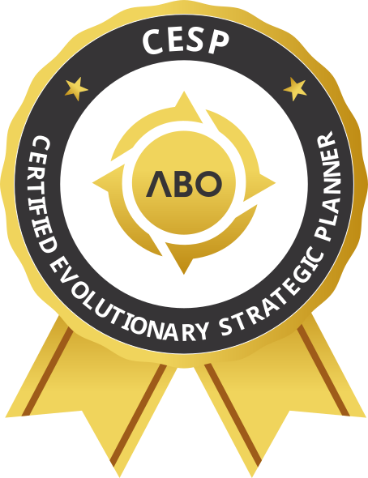

<meta charset="UTF-8">
<meta name="viewport" content="width=device-width, initial-scale=1">
<!--
  CPEE — Landing page para WordPress
  COMO USAR: cole todo este arquivo em um bloco HTML Personalizado ou widget HTML do Elementor.
  VSL: procure por "COLE AQUI O EMBED DA VSL" e substitua o placeholder pelo iframe atual.
-->
<style>
  .cpee-page{--ink:#071327;--navy:#081a38;--navy2:#0d2854;--blue:#119ed0;--gold:#f4b43c;--orange:#ec5a2b;--paper:#f4f1e9;--muted:#aeb8ca;--white:#fff;font-family:Inter,system-ui,-apple-system,"Segoe UI",sans-serif;background:var(--ink);color:var(--white);overflow:hidden;line-height:1.5}
  .cpee-page *{box-sizing:border-box}.cpee-page h1,.cpee-page h2,.cpee-page h3,.cpee-page p{margin-top:0}.cpee-wrap{width:min(1160px,calc(100% - 40px));margin:auto}.cpee-section{padding:96px 0;position:relative}.cpee-eyebrow{display:inline-flex;align-items:center;gap:10px;padding:8px 14px;border:1px solid rgba(244,180,60,.45);border-radius:99px;color:var(--gold);font-size:12px;font-weight:800;letter-spacing:.11em;text-transform:uppercase}.cpee-eyebrow:before{content:"";width:7px;height:7px;background:var(--orange);border-radius:2px}.cpee-title{font-size:clamp(38px,5vw,68px);line-height:.98;letter-spacing:-.045em;margin:34px 0 24px}.cpee-title span,.cpee-h2 span{color:var(--gold)}.cpee-lead{font-size:clamp(18px,2vw,22px);color:#c6cfdd;max-width:650px}.cpee-btn{display:inline-flex;align-items:center;justify-content:center;min-height:58px;padding:0 28px;border-radius:8px;background:linear-gradient(135deg,var(--gold),#f29a27);color:#182034!important;font-weight:900;text-decoration:none!important;text-transform:uppercase;letter-spacing:.03em;box-shadow:0 14px 34px rgba(244,180,60,.22);transition:.2s}.cpee-btn:hover{transform:translateY(-2px);box-shadow:0 18px 42px rgba(244,180,60,.32)}.cpee-btn--orange{background:linear-gradient(135deg,var(--orange),#f47739);color:#fff!important}.cpee-mini{font-size:12px;color:#91a0b5;margin-top:12px}.cpee-h2{font-size:clamp(34px,4vw,54px);line-height:1.02;letter-spacing:-.04em;margin:0 0 18px}.cpee-eyebrow + .cpee-h2{margin-top:30px}.cpee-copy{color:#aeb8ca;font-size:18px;max-width:720px}.cpee-grid{display:grid;gap:22px}.cpee-card{border:1px solid rgba(133,158,198,.18);background:linear-gradient(145deg,rgba(18,45,83,.76),rgba(7,19,39,.92));border-radius:18px;padding:26px;box-shadow:0 20px 50px rgba(0,0,0,.18)}
  .cpee-hero{padding:48px 0 42px;min-height:100vh;display:flex;align-items:center;background:radial-gradient(circle at 85% 12%,rgba(17,158,208,.18),transparent 35%),radial-gradient(circle at 5% 72%,rgba(236,90,43,.13),transparent 30%),var(--ink)}.cpee-hero:after{content:"";position:absolute;inset:0;opacity:.16;pointer-events:none;background-image:radial-gradient(rgba(255,255,255,.55) 1px,transparent 1px);background-size:24px 24px;mask-image:linear-gradient(90deg,transparent,#000,transparent)}.cpee-hero-grid{position:relative;z-index:1;display:grid;grid-template-columns:.92fr 1.08fr;grid-template-areas:"intro video" "copy video";column-gap:50px;row-gap:24px;align-items:center}.cpee-hero-intro{grid-area:intro;align-self:end}.cpee-hero-copy{grid-area:copy;align-self:start}.cpee-brand{display:flex;align-items:center;margin-bottom:24px}.cpee-brand img{display:block;width:190px;height:auto}.cpee-hero .cpee-actions{display:flex;gap:14px;align-items:center;margin-top:32px;flex-wrap:wrap}.cpee-proofline{display:flex;gap:24px;flex-wrap:wrap;margin-top:30px;color:#b8c5d8;font-size:13px}.cpee-proofline strong{color:#fff;font-size:17px;display:block}.cpee-video{grid-area:video;position:relative;padding:14px;border:1px solid rgba(244,180,60,.35);background:rgba(255,255,255,.04);border-radius:24px;box-shadow:0 30px 80px rgba(0,0,0,.38)}.cpee-video:before{content:"VSL";position:absolute;z-index:2;top:-13px;right:28px;background:var(--orange);padding:5px 11px;border-radius:5px;font-size:11px;font-weight:900;letter-spacing:.16em}.cpee-video-inner{aspect-ratio:16/9;border-radius:14px;overflow:hidden;background:linear-gradient(145deg,#111d31,#020711);display:flex;align-items:center;justify-content:center;position:relative}.cpee-video-inner iframe{width:100%;height:100%;border:0}.cpee-play{width:76px;height:76px;background:var(--gold);border-radius:50%;display:grid;place-items:center;box-shadow:0 0 0 14px rgba(244,180,60,.12)}.cpee-play:after{content:"";border-left:22px solid #15223a;border-top:14px solid transparent;border-bottom:14px solid transparent;margin-left:6px}.cpee-video-caption{text-align:center;margin:13px 0 0;color:#9ba7b8;font-size:13px}
  .cpee-strip{padding:24px 0;border-block:1px solid rgba(255,255,255,.08);background:#09172e}.cpee-strip-grid{display:grid;grid-template-columns:repeat(4,1fr);gap:18px}.cpee-stat{display:flex;gap:13px;align-items:center}.cpee-stat b{font-size:28px;color:var(--gold);line-height:1}.cpee-stat span{font-size:13px;color:#aeb8ca}
  .cpee-tension{background:var(--paper);color:#101c32}.cpee-tension .cpee-copy{color:#536078}.cpee-quote{max-width:890px}.cpee-quote strong{display:block;font-size:clamp(36px,4.8vw,66px);line-height:1.03;letter-spacing:-.045em}.cpee-quote strong em{font-style:normal;background:var(--blue);color:#fff;padding:0 .12em}.cpee-quote p{font-size:20px;margin:25px 0 0;color:#526077}.cpee-tension-grid{display:grid;grid-template-columns:1.15fr .85fr;gap:55px;align-items:end}.cpee-side-note{border-left:5px solid var(--orange);padding:20px 0 20px 24px;font-size:20px;font-weight:700}
  .cpee-pillars{grid-template-columns:repeat(4,1fr);margin-top:46px}.cpee-pillar{position:relative;padding-top:56px;min-height:240px}.cpee-number{position:absolute;top:18px;right:20px;font-size:72px;line-height:1;color:rgba(17,158,208,.18);font-weight:900}.cpee-icon{width:42px;height:42px;display:grid;place-items:center;background:var(--blue);border-radius:10px;font-weight:900;margin-bottom:20px}.cpee-pillar h3{font-size:21px;line-height:1.15}.cpee-pillar p{color:#9eacc0;margin:0}
  .cpee-journey{background:#0b1830}.cpee-phases{grid-template-columns:repeat(3,1fr);margin-top:46px;counter-reset:phase}.cpee-phase{counter-increment:phase;position:relative;padding:30px;border-top:4px solid var(--blue)}.cpee-phase:nth-child(2){border-color:var(--gold)}.cpee-phase:nth-child(3){border-color:#69c77c}.cpee-phase:before{content:"0" counter(phase);font-size:13px;font-weight:900;color:var(--gold)}.cpee-phase h3{font-size:24px;margin:12px 0}.cpee-phase ul{padding-left:18px;color:#aeb8ca;margin:0}.cpee-phase li{margin:8px 0}.cpee-program{margin-top:28px;border:1px solid rgba(255,255,255,.1);border-radius:16px;overflow:hidden}.cpee-program details{background:#0d203f;border-bottom:1px solid rgba(255,255,255,.08)}.cpee-program details:last-child{border:0}.cpee-program summary{padding:20px 24px;cursor:pointer;font-weight:800;list-style:none;display:flex;justify-content:space-between}.cpee-program summary:after{content:"+";color:var(--gold);font-size:22px}.cpee-program details[open] summary:after{content:"−"}.cpee-program ul{margin:0;padding:0 48px 24px;color:#aeb8ca}
  .cpee-format{background:var(--paper);color:#101c32}.cpee-format .cpee-copy{color:#536078}.cpee-format-grid{grid-template-columns:repeat(3,1fr);margin-top:42px}.cpee-format-card{background:#fff;border:1px solid #dfe4ec;border-radius:16px;padding:25px;box-shadow:0 18px 40px rgba(20,35,62,.08)}.cpee-format-card b{display:block;font-size:33px;color:#0b5baa}.cpee-format-card span{font-weight:800}.cpee-format-card p{font-size:14px;color:#69758a;margin:7px 0 0}
  .cpee-audience-grid{display:grid;grid-template-columns:.8fr 1.2fr;gap:55px;align-items:start}.cpee-audience-list{display:grid;gap:12px}.cpee-audience-item{display:flex;gap:14px;padding:18px;border-radius:12px;background:#0d203f;border:1px solid rgba(255,255,255,.08);color:#c6cfdd}.cpee-audience-item:before{content:"✓";color:var(--gold);font-weight:900}.cpee-instructor{background:linear-gradient(90deg,#0c1e3a 0 55%,#071327 55%)}.cpee-instructor-grid{display:grid;grid-template-columns:.8fr 1.2fr;gap:55px;align-items:center}.cpee-instructor-photo{min-height:520px;background:linear-gradient(180deg,transparent 55%,#071327),url('https://abo.academy/wp-content/uploads/2026/04/business_agility_luiz.webp') center 18%/cover;border-radius:24px;border:1px solid rgba(244,180,60,.25)}.cpee-credentials{display:grid;gap:12px;margin-top:24px}.cpee-credentials div{padding-left:18px;border-left:3px solid var(--blue);color:#b8c5d8}
  .cpee-testimonials{background:var(--paper);color:#101c32}.cpee-testimonial-grid{grid-template-columns:repeat(3,1fr);margin-top:40px}.cpee-testimonial{background:#fff;border-radius:18px;padding:26px;border:1px solid #dfe4ec;box-shadow:0 15px 38px rgba(20,35,62,.08)}.cpee-avatar{width:66px;height:66px;border-radius:50%;object-fit:cover;border:3px solid var(--gold)}.cpee-stars{color:#e9a526;letter-spacing:.15em;margin:16px 0 10px}.cpee-testimonial p{color:#536078}.cpee-testimonial b{display:block}.cpee-testimonial small{color:#7a8597}
  .cpee-cert{background:radial-gradient(circle at 75% 50%,rgba(244,180,60,.15),transparent 32%),#0b1830}.cpee-cert-grid{display:grid;grid-template-columns:1.2fr .8fr;gap:55px;align-items:center}.cpee-seal{width:min(320px,85%);margin:auto;filter:drop-shadow(0 25px 34px rgba(0,0,0,.42))}.cpee-seal img{display:block;width:100%;height:auto}.cpee-cert-points{display:flex;gap:25px;margin-top:30px;flex-wrap:wrap}.cpee-cert-points div{flex:1;min-width:220px}.cpee-cert-points b{color:var(--gold);display:block;margin-bottom:5px}
  .cpee-offer{background:var(--paper);color:#101c32}.cpee-offer-grid{display:grid;grid-template-columns:1fr 430px;gap:60px;align-items:center}.cpee-offer-list{display:grid;gap:13px;margin-top:28px}.cpee-offer-list div:before{content:"✓";display:inline-grid;place-items:center;width:24px;height:24px;background:#dff4e4;color:#18853a;border-radius:50%;margin-right:10px;font-weight:900}.cpee-price{background:var(--navy);color:#fff;padding:36px;border-radius:24px;border:2px solid var(--gold);box-shadow:0 26px 70px rgba(20,35,62,.2)}.cpee-price .cpee-old{color:#8996aa;text-decoration:line-through}.cpee-price-grid{display:grid;grid-template-columns:1fr 1fr;gap:20px;margin:18px 0 26px}.cpee-price-grid small{color:#8996aa;text-transform:uppercase;font-weight:800}.cpee-price-grid strong{display:block;font-size:34px;line-height:1;color:var(--gold)}.cpee-price-grid div:last-child strong{color:#fff}.cpee-price .cpee-btn{width:100%}.cpee-secure{text-align:center;font-size:12px;color:#8795aa;margin-top:14px}
  .cpee-faq{background:#0b1830}.cpee-faq-grid{max-width:860px;margin:40px auto 0}.cpee-faq details{border-bottom:1px solid rgba(255,255,255,.12)}.cpee-faq summary{cursor:pointer;padding:21px 0;font-weight:800;list-style:none;display:flex;justify-content:space-between}.cpee-faq summary:after{content:"+";color:var(--gold);font-size:22px}.cpee-faq details[open] summary:after{content:"−"}.cpee-faq p{color:#aeb8ca;padding:0 40px 22px 0;margin:0}.cpee-final{text-align:center;background:radial-gradient(circle at 50% 0,rgba(17,158,208,.24),transparent 45%),var(--ink)}.cpee-final .cpee-copy{margin:0 auto 30px}.cpee-final .cpee-h2{max-width:800px;margin-inline:auto}
  @media(max-width:900px){.cpee-section{padding:72px 0}.cpee-hero{padding:40px 0 46px;min-height:auto;align-items:flex-start}.cpee-hero-grid{grid-template-columns:1fr;grid-template-areas:"intro" "video" "copy";gap:34px}.cpee-tension-grid,.cpee-audience-grid,.cpee-instructor-grid,.cpee-cert-grid,.cpee-offer-grid{grid-template-columns:1fr}.cpee-strip-grid{grid-template-columns:1fr 1fr}.cpee-pillars{grid-template-columns:1fr 1fr}.cpee-phases,.cpee-format-grid,.cpee-testimonial-grid{grid-template-columns:1fr}.cpee-instructor{background:#071327}.cpee-instructor-photo{min-height:440px}.cpee-seal{width:230px}.cpee-price{max-width:520px}}
  @media(max-width:560px){.cpee-wrap{width:min(100% - 28px,1160px)}.cpee-section{padding:58px 0}.cpee-hero{padding:26px 0 34px}.cpee-hero-grid{gap:24px}.cpee-brand{margin-bottom:18px}.cpee-brand img{width:148px}.cpee-eyebrow{font-size:10px;padding:7px 10px}.cpee-title{font-size:39px;line-height:.98;margin:30px 0 16px}.cpee-lead{font-size:16px;line-height:1.48}.cpee-hero .cpee-actions{margin-top:22px}.cpee-proofline{display:grid;grid-template-columns:repeat(3,1fr);gap:10px;margin-top:20px;font-size:10px}.cpee-proofline strong{font-size:14px}.cpee-video{padding:9px;border-radius:17px}.cpee-video-inner{border-radius:10px}.cpee-video-caption{font-size:11px;margin:9px 6px 2px}.cpee-play{width:58px;height:58px;box-shadow:0 0 0 10px rgba(244,180,60,.12)}.cpee-play:after{border-left-width:17px;border-top-width:11px;border-bottom-width:11px}.cpee-strip-grid,.cpee-pillars{grid-template-columns:1fr}.cpee-btn{width:100%;text-align:center}.cpee-price-grid{grid-template-columns:1fr}.cpee-instructor-photo{min-height:360px}.cpee-format-grid{grid-template-columns:1fr 1fr}.cpee-format-card{padding:20px}.cpee-format-card b{font-size:26px}}
</style>

<main class="cpee-page">
  <section class="cpee-hero cpee-section">
    <div class="cpee-wrap cpee-hero-grid">
      <div class="cpee-hero-intro">
        <div class="cpee-brand"></div>
        <span class="cpee-eyebrow">Certificação em Planejamento Estratégico Evolucionário</span>
      </div>
      <div class="cpee-hero-copy">
        <h1 class="cpee-title">Estratégia não é um plano.<br><span>É um sistema que evolui.</span></h1>
        <p class="cpee-lead">Domine o método que conecta propósito, prioridades e execução — e torne-se o líder estrategista que as organizações procuram.</p>
        <div class="cpee-actions"><a class="cpee-btn cpee-btn--orange" href="https://abo.academy/checkout/?add-to-cart=52244">Quero garantir minha vaga</a></div>
        <div class="cpee-proofline"><div><strong>30+ horas</strong>formação aplicada</div><div><strong>100+ páginas</strong>de material</div><div><strong>Certificação</strong>ABO Academy</div></div>
      </div>
      <div class="cpee-video">
        <div class="cpee-video-inner">
          <!-- COLE AQUI O EMBED DA VSL. Exemplo: <iframe src="URL_DO_PLAYER" allow="autoplay; fullscreen" allowfullscreen></iframe> -->
          <div class="cpee-play" aria-label="Local reservado para a VSL"></div>
        </div>
        <p class="cpee-video-caption">Assista e descubra como transformar estratégia em execução real.</p>
      </div>
    </div>
  </section>

  <div class="cpee-strip"><div class="cpee-wrap cpee-strip-grid"><div class="cpee-stat"><b>52</b><span>videoaulas com<br>Luiz C. Parzianello</span></div><div class="cpee-stat"><b>20</b><span>questões no<br>exame final</span></div><div class="cpee-stat"><b>7</b><span>testes de<br>checkpoint</span></div><div class="cpee-stat"><b>1</b><span>certificado<br>ABO Academy</span></div></div></div>

  <section class="cpee-tension cpee-section"><div class="cpee-wrap cpee-tension-grid"><div class="cpee-quote"><strong>Imagine entrar numa reunião de planejamento e <em>todos pararem para ouvir.</em></strong><p>Não por causa do cargo. Mas porque você sabe transformar uma visão complexa em uma estratégia que as pessoas conseguem executar.</p></div><div class="cpee-side-note">Esse profissional não improvisa. Ele tem um método — e é esse método que você vai dominar.</div></div></section>

  <section class="cpee-section"><div class="cpee-wrap"><span class="cpee-eyebrow">A transformação</span><h2 class="cpee-h2">Os quatro pilares do <span>líder evolucionário</span></h2><p class="cpee-copy">Uma formação para conduzir a estratégia como um fluxo contínuo de decisões, aprendizagem e evolução organizacional.</p><div class="cpee-grid cpee-pillars"><article class="cpee-card cpee-pillar"><span class="cpee-number">01</span><div class="cpee-icon">♟</div><h3>Pensamento evolucionário</h3><p>Leia o contexto e adapte escolhas sem perder o direcionamento.</p></article><article class="cpee-card cpee-pillar"><span class="cpee-number">02</span><div class="cpee-icon">↗</div><h3>Decisões conectadas</h3><p>Conecte propósito, resultados, capacidades e recursos.</p></article><article class="cpee-card cpee-pillar"><span class="cpee-number">03</span><div class="cpee-icon">◎</div><h3>Prioridades claras</h3><p>Transforme complexidade em escolhas que mobilizam pessoas.</p></article><article class="cpee-card cpee-pillar"><span class="cpee-number">04</span><div class="cpee-icon">⚙</div><h3>Execução alinhada</h3><p>Faça o planejamento sobreviver ao contato com a realidade.</p></article></div></div></section>

  <section class="cpee-journey cpee-section"><div class="cpee-wrap"><span class="cpee-eyebrow">Jornada de aprendizagem</span><h2 class="cpee-h2">Do fundamento à <span>aplicação prática</span></h2><p class="cpee-copy">Nove capítulos organizados em uma progressão lógica para você construir domínio real do método.</p><div class="cpee-grid cpee-phases"><article class="cpee-card cpee-phase"><h3>Metodologia</h3><ul><li>Introdução ao Planejamento Estratégico Evolucionário</li><li>Pensamento Evolucionário da ABO</li><li>Fundamentos do método</li></ul></article><article class="cpee-card cpee-phase"><h3>Implementação</h3><ul><li>Estruturação do processo estratégico</li><li>Conexão entre direção e execução</li><li>Aprendizagem estratégica contínua</li></ul></article><article class="cpee-card cpee-phase"><h3>Prática e exame</h3><ul><li>Considerações de aplicação</li><li>Casos e decisões reais</li><li>Exame de conclusão</li></ul></article></div><div class="cpee-program"><details open><summary>Parte I — Metodologia</summary><ul><li>Introdução ao Planejamento Estratégico Evolucionário</li><li>O Pensamento Evolucionário da Agile Business Ownership</li><li>Os fundamentos do Planejamento Estratégico Evolucionário</li></ul></details><details><summary>Parte II — Implementação</summary><ul><li>Condução do processo e desenho estratégico</li><li>Desdobramento em prioridades e execução</li></ul></details><details><summary>Parte III — Considerações práticas</summary><ul><li>Aplicação em ambientes complexos e adaptativos</li><li>Armadilhas e boas práticas</li></ul></details><details><summary>Exame de conclusão</summary><ul><li>Avaliação final e certificado de conclusão ABO Academy</li></ul></details></div></div></section>

  <section class="cpee-format cpee-section"><div class="cpee-wrap"><span class="cpee-eyebrow">Completo e flexível</span><h2 class="cpee-h2">Profundidade para transformar.<br><span>Flexibilidade para avançar.</span></h2><p class="cpee-copy">Estude no seu ritmo, com recursos que ajudam a levar cada conceito para a prática.</p><div class="cpee-grid cpee-format-grid"><div class="cpee-format-card"><b>30h+</b><span>de conteúdo</span><p>Uma formação consistente, sem superficialidade.</p></div><div class="cpee-format-card"><b>52</b><span>videoaulas</span><p>Com Luiz C. Parzianello, organizadas em progressão.</p></div><div class="cpee-format-card"><b>100+</b><span>páginas de apoio</span><p>Textos e materiais para aprofundar o aprendizado.</p></div><div class="cpee-format-card"><b>7</b><span>checkpoints</span><p>Testes para consolidar o conhecimento.</p></div><div class="cpee-format-card"><b>IA</b><span>agentes de apoio</span><p>Recursos para acelerar análise e aplicação.</p></div><div class="cpee-format-card"><b>∞</b><span>comunidade</span><p>Troca com profissionais que aplicam o método.</p></div></div></div></section>

  <section class="cpee-section"><div class="cpee-wrap cpee-audience-grid"><div><span class="cpee-eyebrow">Para quem é</span><h2 class="cpee-h2">Quem conecta visão à execução <span>precisa deste repertório.</span></h2><p class="cpee-copy">Experiência prévia em planejamento é recomendada, mas não obrigatória. O requisito essencial é disposição para aplicar estratégia na prática.</p></div><div class="cpee-audience-list"><div class="cpee-audience-item">Gestores de programas estratégicos e Business Owners</div><div class="cpee-audience-item">Business coaches que apoiam processos de planejamento</div><div class="cpee-audience-item">Profissionais de estratégia, planejamento e portfólio</div><div class="cpee-audience-item">Líderes em ambientes de Business Agility</div><div class="cpee-audience-item">Diretores, heads, consultores seniores e especialistas em inovação</div></div></div></section>

  <section class="cpee-instructor cpee-section"><div class="cpee-wrap cpee-instructor-grid"><div class="cpee-instructor-photo" role="img" aria-label="Luiz C. Parzianello"></div><div><span class="cpee-eyebrow">Com quem você vai estudar</span><h2 class="cpee-h2">Luiz C.<br><span>Parzianello</span></h2><p class="cpee-copy">Pioneiro do pensamento ágil no Brasil desde 2002 e uma das principais referências nacionais em Agilidade de Negócios.</p><div class="cpee-credentials"><div>Fundador da ABO Academy e autor do ABO Framework</div><div>Autor do método ABO Evolutionary Strategic Planning</div><div>Autor de “Liderança Evolucionária” (2024)</div><div>Coautor da Agile Extension to the BABOK® Guide</div><div>Mais de 15 anos na estratégia de grandes organizações</div></div></div></div></section>

  <section class="cpee-testimonials cpee-section"><div class="cpee-wrap"><span class="cpee-eyebrow">Prova social</span><h2 class="cpee-h2">Quem aplica, <span>muda a forma de liderar.</span></h2><div class="cpee-grid cpee-testimonial-grid"><article class="cpee-testimonial"><div class="cpee-stars">★★★★★</div><p>“O método trouxe clareza para conectar estratégia, decisões e execução no dia a dia.”</p><b>Raphael Gondim</b><small>Aluno ABO Academy</small></article><article class="cpee-testimonial"><div class="cpee-stars">★★★★★</div><p>“Uma abordagem profunda, prática e muito diferente do planejamento tradicional.”</p><b>Consuelo Vechiatti</b><small>Aluna ABO Academy</small></article><article class="cpee-testimonial"><div class="cpee-stars">★★★★★</div><p>“Saí com repertório e estrutura para conduzir conversas estratégicas mais maduras.”</p><b>Danilo Porto</b><small>Aluno ABO Academy</small></article></div></div></section>

  <section class="cpee-cert cpee-section"><div class="cpee-wrap cpee-cert-grid"><div><span class="cpee-eyebrow">Credencial exclusiva</span><h2 class="cpee-h2">Vá além do curso com a <span>certificação ABO CESP®.</span></h2><p class="cpee-copy">Profissionais que concluírem a formação poderão avançar para a credencial Certified Evolutionary Strategic Planner, concedida a quem comprova domínio e aplicação real do método.</p><div class="cpee-cert-points"><div><b>Reconhecimento</b>Badge digital para LinkedIn e diretório oficial de profissionais certificados.</div><div><b>Aplicação real</b>Credencial baseada em domínio e prática — não apenas presença.</div></div></div><div class="cpee-seal"></div></div></section>

  <section class="cpee-offer cpee-section"><div class="cpee-wrap cpee-offer-grid"><div><span class="cpee-eyebrow">Condição especial</span><h2 class="cpee-h2">Comece agora sua <span>evolução estratégica.</span></h2><p class="cpee-copy">Acesso à formação completa, materiais, checkpoints, exame e certificado de conclusão emitido pela ABO Academy.</p><div class="cpee-offer-list"><div>30+ horas de formação EAD no seu ritmo</div><div>Textos, materiais e agentes de IA</div><div>7 checkpoints e exame final</div><div>Comunidade de prática</div><div>Certificado de conclusão ABO Academy</div></div></div><aside class="cpee-price"><span class="cpee-eyebrow">Pré-lançamento</span><p class="cpee-old">De R$ 1.500,00</p><div class="cpee-price-grid"><div><small>Cartão</small><strong>3x R$300</strong><span>sem juros</span></div><div><small>Pix</small><strong>R$ 897,99</strong><span>à vista</span></div></div><a class="cpee-btn cpee-btn--orange" href="https://abo.academy/checkout/?add-to-cart=52244">Quero garantir minha vaga</a><p class="cpee-secure">Compra segura · Ex-alunos recebem +10% no carrinho</p></aside></div></section>

  <section class="cpee-faq cpee-section"><div class="cpee-wrap"><div style="text-align:center"><span class="cpee-eyebrow">Dúvidas frequentes</span><h2 class="cpee-h2">Antes de começar</h2></div><div class="cpee-faq-grid"><details open><summary>Como funciona o acesso ao curso?</summary><p>O programa é oferecido em plataforma EAD, com aulas e materiais organizados para que você avance no seu ritmo dentro de uma estrutura progressiva.</p></details><details><summary>Qual é a carga horária da certificação?</summary><p>A formação possui mais de 30 horas de conteúdo, distribuídas em videoaulas, leituras, atividades e avaliações.</p></details><details><summary>Recebo certificado ao concluir?</summary><p>Sim. Após concluir a formação e ser aprovado no exame final, você recebe o Certificado de Conclusão da ABO Academy.</p></details><details><summary>Para quem esta formação é indicada?</summary><p>Para líderes, gestores, coaches, profissionais de estratégia, planejamento, portfólio, inovação e Business Agility.</p></details><details><summary>Existe uma certificação prática além do curso?</summary><p>Sim. Após a conclusão, você poderá avançar para a credencial exclusiva ABO CESP®, que reconhece domínio e aplicação prática do método.</p></details></div></div></section>

  <section class="cpee-final cpee-section"><div class="cpee-wrap"><span class="cpee-eyebrow">A decisão é sua</span><h2 class="cpee-h2">A estratégia do futuro não será estática.<br><span>E a sua liderança também não pode ser.</span></h2><p class="cpee-copy">Domine o método que transforma propósito em decisões, execução e evolução contínua.</p><a class="cpee-btn cpee-btn--orange" href="https://abo.academy/checkout/?add-to-cart=52244">Quero garantir minha vaga</a></div></section>
</main>
